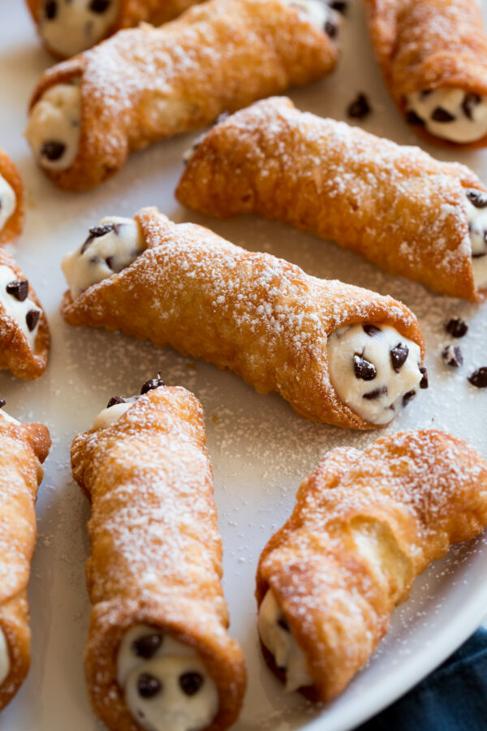

Cannoli

Description
An Italian pastry consisting of a tube-shaped shell of fried pastry dough and filled with a sweet, creamy filling containing ricotta.
Chocolate chips and pistachios are often added as toppings.
Ingredients for the cannoli shells
- unbleached all-purpose flour
- granulated sugar
- salt
- unsalted butter
- marsala wine
- egg and egg white
- vegetable oil
Ingredients for the cannoli filling
- whole milk ricotta
- powedered sugar
- mini chocolate chips
- cinnamon
- pistachios (optional)
Equipment needed
- food processor
- rolling pin and metal tongs
- 4-inch round or oval cookie cutters
- cannoli forms
- piping bad and large round tip (or a large ziploc with a snipped corner)
Instructions to make the cannoli shells
- Mix dry ingredients in a food processor
- Pulse in butter
- Add marsala wine and egg and pulse to bring together
- Transfer to oiled bowl, cover and rest dough
- Heat oil in pot
- Roll dough out very thin on a floured surface
- Cut into rounds or ovals (about 4-inches each)
- Wrap rounds around greased cannoli forms, brush top or bottom edge with egg white to seal shut
- Fry in preheated oil until golden brown and crisp, about 1 – 2 minutes
- Remove cannoli shells and drain on paper towels
- Remove shells from forms, let forms cool and repeat process
- Let shells cool completely then fill with cannoli filling
Instructions to make the cannoli filling
- Strain ricotta
- Add ricotta, sugar, chocolate chips and cinnamon to a mixing bowl
- Fold and stir mixture to blend